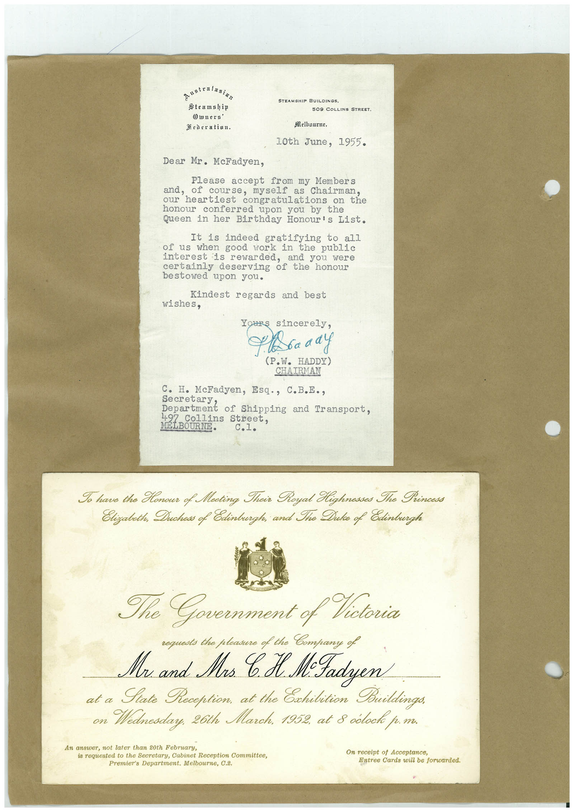

Book 1 · scan 123


Description
Transcription
Context
Review notes
Compare the machine draft with the scan. Handwriting and names need human review.
Artifacts
Edit the artifacts field in this note’s frontmatter to change these records. This summary is generated.
B01-S123-A01 — Letter & Invitation — Book 1, scan 123
Types: Typed document, Letter, Invitation
Scope: Whole scanned page; individual items can be split out during review.
Caption: Not mapped yet.
Caption source: Not recorded yet.
Caption status: unmapped
Machine transcription
australasian Steamship Diners' Hederatian. STEAMSHIP BUILDINGS. 509 COLLINS STREET. Melbourne, 10th June, 1955. Dear Mr. McFadyen, Please accept from my Members of course, myself as Chairman, our neartlest congratulations on the honour conferred upon you by the Queen in her Birthday Honour's List. It is indeed gratifying to all of us when good work in the public interest is rewarded, and you were certainly deserving of the honour bestowed upon you. Kindest wishes, regards and best ours sincerely, (P.W. HADDY) CHAIRMAN C. H. McFadyen, Esq., C.B.E., Separtment of shipping and Transport, 497 Collins Street. MELBOURNE. C.1. Io have the Honour of Meeting Their Royal Kighnesses The Princess Elizabeth, Duchess of Edinburgh; and The Duke of Edinburgh 32 The Government of Victoria requests the pleasure of the Company of Mr and Mrs CH. M-Fadyen at a Fate Reception, at the Exhibition Buildings, on Wednesday, 26th March, 1952, at 8 odocke p.m. An answer, not later than 20th February, is requested to the Secretary, Cabinet Reception Committee, Premier's Department. Melbourne, C.2. On receipt of Acceptance, Entree Cards will be forwarded.